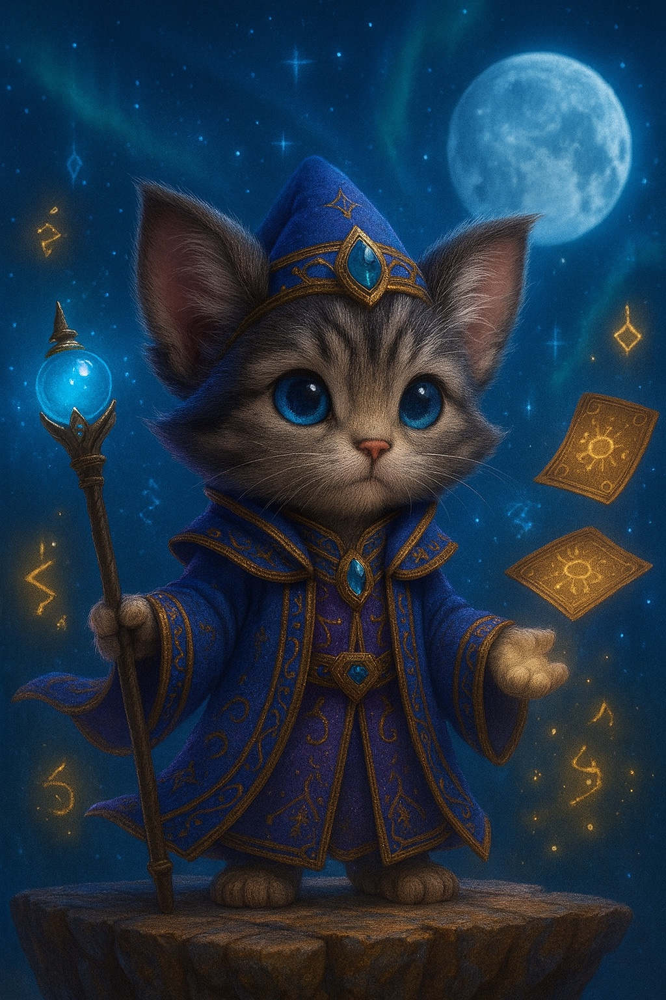
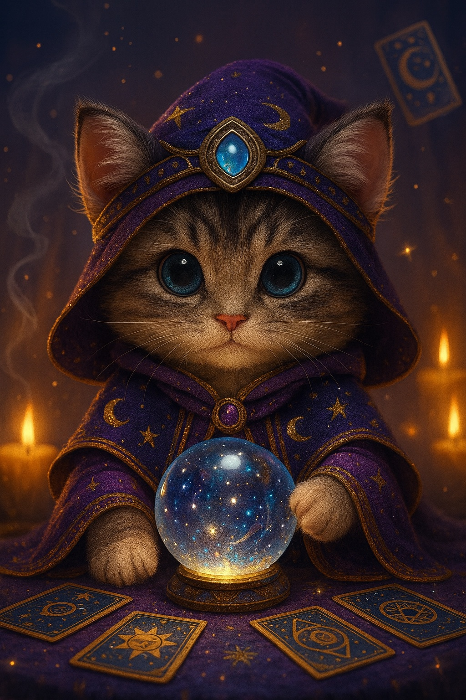
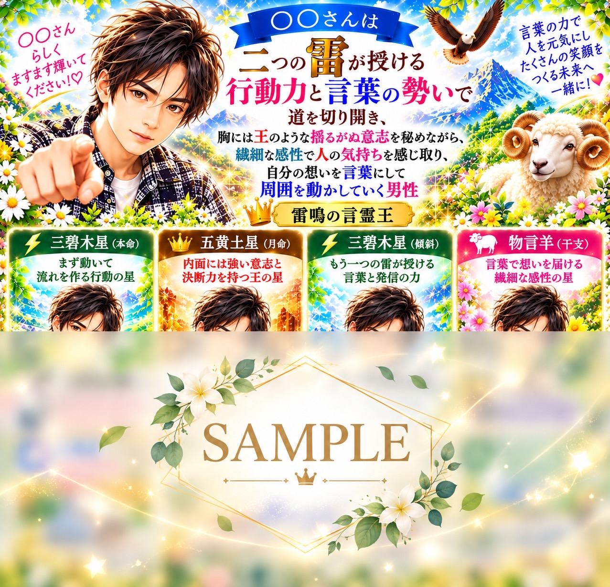

これからの一歩を照らす
杖のルナ
今のあなたに必要な運の生かし方を、
身近なテーマから、これからの一歩を
やさしく照らします。
- 毎日できる開運アクション
- 運気を生かすタイミング
- 迷ったときの進み方
開運氣學師のルナとケンケンが
あなたの人生を明るく照らします

これからの一歩を照らす
今のあなたに必要な運の生かし方を、
身近なテーマから、これからの一歩を
やさしく照らします。
生年月日から、
今日のあなたにぴったりな
開運ヒントをお届けします。
ふたりの違いも、魅力に変えて。
心地よいつながりを育むヒントをお届けします。
本命星の五行（木・火・土・金・水）の関係から読む簡易鑑定です。本命星は本サイトの基本鑑定と同じ算出ルールで、2月4日を年の切り替わりとして扱います。実際の立春時刻は考慮しません。月命星・傾斜・干支を組み合わせた総合相性ではありません。
恋愛・友人・家族など、性別を問わず楽しめます。関係の良し悪しや未来を決めるものではありません。入力した2人の生年月日は、この相性占いでは保存・送信しません。
水晶玉であなたの魅力を読み解き、
これからの一歩をやさしく照らします。

あなた自身を読み解く
生年月日から、
本命星・月命星・傾斜・60分類干支を組み合わせ、あなたの本質や魅力を丁寧に読み解きます。
生年月日から、あなたらしさを見つめて。
ふたつの占いで、魅力と強みのヒントをお届けします。
MAYA / DREAMSPELL
NUMEROLOGY
九星氣學で、あなたをもう一歩深く。
マヤ暦は現代のドリームスペル系です。伝統的なマヤのツォルキンとは異なります。1987年7月26日＝KIN34を基準とし、2月29日を通常の日数に含めず計算します。出生時間帯が不明の2月29日は、2月28日・3月1日の候補を併記します。
数秘は西暦の生年月日の全桁を合計し、1桁になるまで足します。途中の11・22・33はそのまま残す独自の採用ルールです。年月日を別々に還元する方式とは結果が異なる場合があります。
ふたつの占術を組み合わせたルナ独自の読み解きです。性格や未来を科学的に判定するものではありません。生年月日はこの鑑定では保存・送信しません。
まずはあなたの星から、
生まれ持った本質と魅力を見つけてみませんか。
本命星・月命星・傾斜・干支から、
ルナがあなたの魅力を読み解きます。
水晶玉に、あなたの星の輝きが
映し出されています…
あなたらしさは、幸運をひらくいちばん大切な力です。今日からその魅力を、少しずつ輝かせていきましょう。
あなたの星を、もう一歩深く。
生まれ持った魅力を知り、
これからの運氣を日々の選択に生かすために。
ケンケンが、一人ひとりのお悩みに寄り添う
有料のLINE個別鑑定を承ります。
あなたを幅広く見つめる
1000円
本質や魅力をもとに、
仕事・恋愛・人間関係などを
総合的に読み解きます。
ひとつのお悩みを丁寧に
1000円
1つのお悩みを深く読み解き、
これからの一歩につながる行動のヒントを
お伝えします。
鑑定後の一歩を支える
2000円
鑑定で見つけたヒントを
行動につなげられるよう、
九星氣學を元に
開運のアドバイスをさせていただきます。
※すべてのコースに、
鑑定内容をまとめた解説画像が付きます。

「自分では当たり前だと思っていたことを、魅力として言葉にしてもらえて嬉しかったです。仕事の悩みも丁寧に聞いていただき、まず何から始めたいかを考えるきっかけになりました。」
相談テーマ例：仕事・自分の魅力
「人間関係で考えすぎていましたが、自分と相手の違いを見つめ直すヒントをいただきました。優しい言葉にほっとして、無理をせず少しずつ向き合ってみようと思えました。」
相談テーマ例：人間関係
九星氣學は、生まれ持った性質や運気の流れを知り、毎日の選択に生かすための知恵です。
開運氣學師ケンケン
開運氣學師ケンケンが大切にしているのは、自分の魅力に気づき、前向きな一歩につながる鑑定。ルナは、その想いを届ける猫の案内役です。
九星氣學と60分類干支をもとに、あなたらしさを知るヒントと、日々取り入れやすい開運のアイデアをお届けします。
はじめての方も、安心してお楽しみください。
★毎日の占い
ラッキーカラー・パワーフード・開運アクション・ラッキーナンバー・今日の一言をご覧いただけます。
★相性占い
ふたりの生年月日から、本命星の五行をもとに、お互いの特徴や心地よい関係を育むヒントをお届けします。
★マヤ暦×数秘鑑定
KIN・太陽の紋章・ウェイブスペル・銀河の音・数秘から、あなたらしさや強みを見つめるヒントをお届けします。
★基本鑑定
本命星・月命星・傾斜・干支から、あなたの本質や魅力を読み解きます。
すべて何度でも無料でお楽しみいただけます。
毎日の占い・基本鑑定で入力した生年月日は、お使いの端末のブラウザー内に保存されます。相性占い・マヤ暦×数秘鑑定で入力した生年月日は保存されません。
別の端末やブラウザーでは再入力が必要です。共有の端末では、毎日の占い・基本鑑定で保存した生年月日が次の利用者に表示される場合があります。
本命星は生まれた年から読み解く基本的な性質、月命星は生まれた月から読み解く内面の性質、傾斜は本命星と月命星の組み合わせから読み解く心の傾向です。ひとつの星だけで決めつけず、それぞれを重ねてあなたの魅力を見つめます。
ケンケンによる有料のLINE個別鑑定をご案内しています。
コース選びに迷う方も、LINEからお気軽にご相談ください。
ルナと一緒に、その輝きを見つけていきましょう。
トップに戻る